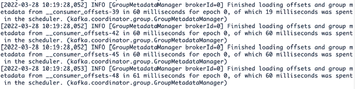
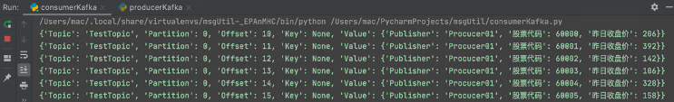

Kafka入门教程（非常详细）
Kafka 是 LinkedIn 开源的分布式消息订阅系统，目前归属 Apache 顶级开源项目，主要特点是基于 Pull 模式来处理消息消费，追求高吞吐量，一开始用于日志的收集和传输，适合大数据的数据收集业务
一、Kafka简介
Kafka 专为高容量发布/订阅消息和流而设计，旨在持久、快速和可扩展。从本质上讲，Kafka 提供了一个持久的消息存储，类似于日志，其具备的特点如表1所示。| 特点 | 具体作用 |
|---|---|
| 解耦 | 允许独立地扩展或修改消费者和生产者的处理过程，只要确保它们遵守同样的接口约束即可。 |
| 冗余 | 消息队列把数据进行持久化直到它们已经被完全处理，这规避了数据丢失的风险。 |
| 灵活性 | 在访问量剧增的情况下，应用仍然需要继续发挥作用，使用消息队列能够使关键组件顶住突发的访问压力，不会因为突发的超负荷的请求而完全崩溃。 |
| 可恢复性 | 系统的一部分组件失效时，不会影响到整个系统。消息队列降低了进程间的耦合度，所以即使一个处理消息的进程失效，加入队列的消息仍然可以在系统恢复后被处理。 |
| 有序性 | 在大多数使用场景下，数据处理的顺序很重要。大部分消息队列是有序的，并且能保证数据会按照特定的顺序来处理，Kafka 能保证一个分区内的消息的有序性。 |
| 缓冲 | 有助于控制和优化数据流经过系统的速度，解决生产消息和消费消息的处理速度不一致的问题。 |
| 异步通信 | 在很多时候，用户不想也不需要立即处理消息。消息队列提供了异步处理机制，允许用户把一个消息放入队列，但不立即处理它，用户想放入队列多少消息就放入多少，然后在需要的时候去处理它们。 |
Kafka 采用 Scala 和 Java 编写，图1中包含2个生产者、1个主题、3个分区、3个副本、3个 Kafka 实例和1个消费者组，1个消费者组包含3个消费者。
图1：Kafka基础架构
下面我们逐一介绍图1中的概念。
1) 生产者（Producer）
顾名思义，生产者是生产消息的，即发送消息的。生产者发送的每一条消息必须有一个主题，即消息的类别。生产者会源源不断地向 Kafka 服务器发送消息。
2) 主题（Topic）
类似我们传统数据库中的表名，例如发送一条主题为 order（订单）的消息，那么 order 下会有多条关于订单的消息。3) 分区（Partition）
生产者发送的消息主题会被存储在分区中，Kafka 把数据分成多个块，让消息合理地分布在不同的分区，分区被分在不同的 Kafka 实例也就是服务器上，这样就实现了大量消息的负载均衡。每个主题可以指定多个分区，但是至少指定一个分区。每个分区存储的数据都是有序的，不同分区间的数据不保证有序性。因为如果有多个分区，消费消息是各个分区独立开始的，有的分区消费得慢，有的分区消费得快，因此不能保证有序。那么当需要保证消息顺序消费时，我们可以将消息设置为一个分区，这就可以保证有序了。
为了保证 Kafka 的吞吐量，一个主题可以设置多个分区，而同一分区只能被一个消费者订阅。
4) 副本（Replica）
副本是分区中数据的备份，是 Kafka 为了防止数据丢失或者服务器宕机采取的保护数据完整性的措施，一般的数据存储工具都会有这个功能。假如我们有3个分区，由于不同分区分别存放了部分数据，因此为了全部数据的完整性，我们必须备份所有分区。这时候我们的一个副本包括3个分区，每个分区有一个副本，两个副本就包含6个分区，一个分区两个副本。
Kafka 制作副本之后会把副本放到不同的服务器上，保证负载均衡。
5) Kafka实例或节点（Broker）
启动一个 Kafka 就产生一个 Kafka 实例，多个 Kafka 实例构成一个 Kafka 集群，这体现了分布式。服务器多了，吞吐率效率将会提高。6) 消费者组（Consumer Group）和消费者（Consumer）
消费者读取 Kafka 中的消息，可以消费任何主题的数据。多个消费者组成一个消费者组，一般消费者必须有一个组（Group）名，如果没有的话会被分一个默认的组名。一个组可以有多个消费者，一条消息在一个组中，只会被一个消费者获取。
提示
对于传统的消息队列，一般消费过的消息会被删除，而在 Kafka 中消费过的消息不会被删除，始终保留所有的消息，只记录一个消费者消费消息的偏移量（offset，用于记录消费位置）作为标记。Kafka 允许消费者自己设置这个偏移量，允许消费者重复消费一些消息。但始终不删除消费过的消息，日积月累，消息势必会越来越多，占用空间也越来越大。Kafka 提供了两种策略来删除消息：一种是基于时间，另一种是基于分区文件的大小，我们可以通过配置来决定使用哪种方式。
Kafka 可以处理消费者规模的网站中的所有动作流数据。Kafka 的优势如下：
- 高吞吐量、低延迟。Kafka 每秒可以处理几十万条消息，它的延迟最低只有几毫秒。
- 可扩展。Kafka 集群支持热扩展。
- 持久、可靠。消息被持久化到本地磁盘，并且支持数据备份，防止数据丢失。
- 容错。Kafka 允许集群中出现节点故障（若副本数量为 n，则允许 n-1 个节点故障）。
- 高并发。Kafka 支持数千个客户端同时读写。
Kafka 适合如下应用场景：
- 日志收集。我们可以用 Kafka 收集各种服务的日志，通过 Kafka 以统一接口服务的方式开放给消费者。
- 消息系统。Kafka 可以解耦生产者和消费者、缓存消息等。
- 用户活动跟踪。Kafka 经常被用来记录 Web 用户或者 APP 用户的各种活动，如浏览网页、搜索、点击等，这些活动信息被各服务器发布到 Kafka 的主题中，然后消费者通过订阅这些主题可以进行实时的监控分析，或保存到数据库。
- 运营指标。Kafka 经常用来记录运营监控数据，包括收集各种分布式应用的数据、生产各种操作的集中反馈，如报警和报告。
- 流式处理。例如 Spark Streaming 和 Storm。
二、Kafka 的使用
1. 安装部署
Kafka 运行在 JVM 上，因此我们要先确保计算机安装了 JDK，Kafka 需要 Java 运行环境。旧版的 Kafka 还需要 ZooKeeper，新版的 Kafka 已经内置了一个 ZooKeeper 环境，所以可以直接使用。
在本教程，我们将使用 Kafka_2.12-3.1.0，待部署的环境的服务器系统版本为 CentOS Linux release 7.6.1810 (Core) ，内核版本为 3.10.0-1127.13.1.el7.x86_64。1) 首先下载源码包后解压并进入目录：
tar -zxvf Kafka_2.12-3.1.0.tgz cd Kafka_2.12-3.1.0/
2) 修改配置文件。
在 Kafka 解压后的目录下有一个 config 文件夹，里面放置如下3个配置文件：
- consumer.properites：消费者配置，该配置文件用于配置消费者，此处我们使用默认的即可。
- producer.properties：生产者配置，该配置文件用于配置生产者，此处我们使用默认的即可。
- server.properties：Kafka 服务器的配置，该配置文件用来配置 Kafka 服务器，目前仅介绍几个最基础的配置，如表2所示。
| 基本配置名称 | 描述 |
|---|---|
| broker.id | 声明当前 Kafka 服务器在集群中的唯一 ID，需配置为 integer，并且集群中的每一个 Kafka 服务器的 ID 都应是唯一的，我们这里采用默认配置即可。 |
| listeners |
声明当前 Kafka 服务器需要监听的端口号：
|
| zookeeper.connect | 声明当前 Kafka 服务器连接的 ZooKeeper 的地址，需配置为 ZooKeeper 的地址，由于本次使用的 Kafka 版本中自带 ZooKeeper，因此使用默认配置 zookeeper.connect= localhost:2181 即可。 |
| log.dirs Kafka | 存放日志数据目录。 |
| log.retention.hours | 保留日志数据时间，默认为 7 天，超过该时间就分段（segment）。 |
| log.segment.bytes | 日志分段的大小，默认为 1GB，超过该大小就分段（segment）。 |
| delete.topic.enable | 生产环境不允许删除主题数据，测试环境可以将该配置设置为 true。 |
3) 启动相关的服务。
执行如下命令，先启动 ZooKeeper，再启动 Kafka：
bin/zookeeper-server-start.sh config/zookeeper.properties bin/Kafka-server-start.sh config/server.propertiesZooKeeper 启动成功如图2所示，Kafka 启动成功如图3所示。
图2：ZooKeeper 启动成功

图3：Kafka 启动成功
4) 验证是否启动成功。执行如下命令：
ps ax | grep -i 'Kafka\.Kafka' | grep java | grep -v grep
若成功启动 Kafka 服务器端，则如图4所示，可以看到 Kafka 的后台进程。图4：Kafka 后台进程
至此，我们完成了 Kafka 的服务器端进程的部署。
2. 使用说明
Python 中用于连接 Kafka 客户端的标准库有3种：PyKafka、kafka-python 和 confluent-Kafka。其中，kafka-python 使用的人多，是比较成熟的库。在本教程中，我们使用 kafka-python 2.0.2。我们可以通过执行命令来安装：
pip install kafka-python
也可以在 PyCharm 的集成工具中安装，如图5所示。图5：在 PyCharm 的集成工具中安装 kafka-python
3. KafkaProducer
KafkaProducer 用于发送消息到 Kafka 服务器，它是线程安全的且共享单一生产者实例。我们要往 Kafka 写入消息，首先要创建一个生产者对象，并设置一些属性，服务器在收到消息之后会返回一个响应：- 如果消息成功写入 Kafka，就返回一个 RecordMetadate 对象，包含主题和分区信息，以及记录在分区里的偏移量；
- 如果写入失败，则会返回一个错误。
KafkaProducer 有3种发送消息的方法：
- 立即发送。只管发送消息到服务器端，不管消息是否成功发送。大部分情况下，这种发送方式会成功，因为 Kafka 具有高可用性，所以生产者会自动重试，但有时也会丢失消息。
- 同步发送。通过 send() 方法发送消息，并返回 Future 对象。get() 方法会等待 Future 对象，看 send() 方法是否成功。
- 异步发送。通过带有回调函数的 send() 方法发送消息，在生产者收到 Kafka 实例的响应时会触发回调函数。
注意，对于以上所有情况，我们一定要关注发送消息可能会失败的异常处理。
单个生产者启用多个线程发送消息如代码清单1所示。
代码清单1：producerDemo1
# -*- coding: utf-8 -*-
# @Time : 2023/7/27 10:41 上午
# @Project : msgUtil
# @File : producerDemo1.py
# @Version: Python3.9.8
from Kafka import KafkaProducer, KafkaConsumer
from Kafka.errors import Kafka_errors
import traceback
import json
def producer_demo():
# 假设生产的消息为键值对（不是一定为键值对），且序列化方式为JSON
producer = KafkaProducer(
bootstrap_servers=['localhost:9092'],
key_serializer=lambda k: json.dumps(k).encode(),
value_serializer=lambda v: json.dumps(v).encode())
# 发送3条消息
for i in range(0, 3):
# producer默认是异步的
future = producer.send(
'Kafka_demo',
key='count_num', # 同一个key值，会被送至同一个分区
value=str(i),
partition=1) # 向分区1发送消息
print("send {}".format(str(i)))
try:
# 加了get()方法就变成了同步,即要等待获取服务器端返回的结果后再往下执行
future.get(timeout=10) # 监控是否发送成功
except Kafka_errors: # 发送失败抛出Kafka_errors
traceback.format_exc()
运行上述代码后，生产者往消息队列发送消息成功，如图6所示。图6：生产者发送消息成功
分区
分区是 Kafka 中一个很重要的部分，合理使用分区，可以提升 Kafka 的整体性能。Kafka 分区有如下好处：
- 便于合理使用存储资源。不同分区在不同 Kafka 实例上存储，我们可以把海量的数据按照分区切割成一块一块的数据存储在多个 Kafka 实例上。合理控制分区的任务，可以实现负载均衡。
- 提高并行度。生产者可以以分区为单位发送数据，消费者可以以分区为单位进行消费数据。
- 在某些情况下，可以实现顺序消费。
在生产环境中，我们需要保证消费者的消费速度大于生产者的生产速度，所以需要检测 Kafka 中的剩余堆积量是在增加还是在减小，时刻监测队列消息剩余量。
查看 Kafka 堆积剩余量如代码清单2所示。
代码清单2：producerDemo2
# -*- coding: utf-8 -*-
# @Time : 2023/7/27 11:41 上午
# @Project : msgUtil
# @File : producerDemo2.py
# @Version: Python3.9.8
from Kafka import KafkaProducer, KafkaConsumer
consumer = KafkaConsumer(topic, **kwargs)
partitions = [TopicPartition(topic, p) for p in consumer.partitions_for_topic(topic)]
print("start to cal offset:")
# total
toff = consumer.end_offsets(partitions)
toff = [(key.partition, toff[key]) for key in toff.keys()]
toff.sort()
print("total offset: {}".format(str(toff)))
# current
coff = [(x.partition, consumer.committed(x)) for x in partitions]
coff.sort()
print("current offset: {}".format(str(coff)))
# cal sum and left
toff_sum = sum([x[1] for x in toff])
cur_sum = sum([x[1] for x in coff if x[1] is not None])
left_sum = toff_sum - cur_sum
print("Kafka left: {}".format(left_sum))
在代码清单2中，在 KafkaProducer 初始化的时候，除了需要参数 servers、key_serializer 和 value_serializer，还需要其他初始化参数，如表4所示。| 初始化参数 | 含义 |
|---|---|
| bootstrap.servers |
指定 Kafka 实例的地址清单，地址格式为 host:port。 清单不需要包含所有的 Kafka 实例地址，生产者会从给定的 Kafka 实例中查找其他的 Kafka 实例信息。建议至少提供两个 Kafka 实例信息，这样即使其中一个宕机，生产者仍然能连接集群。 |
| buffer_memory |
生产者缓存消息的缓冲区大小，默认为 33 554 432 字节（32MB）。 如果采用异步发送消息，那么生产者启动后会创建一个内存缓冲区用于存放待发送的消息，然后由专属线程发送放在缓冲区的消息。如果生产者要给很多分区发消息，那么需防止参数设置过小而降低吞吐量。 |
| compression_type |
是否启用压缩，默认是 none，可选类型为 gzip、lz4 和 snappy。 压缩会降低网络 IO，但是会增加生产者端的 CPU 消耗。Kafka 实例端的压缩设置和生产者的压缩设置不同也会给 Kafka 实例带来重新解压缩和重新压缩的 CPU 负担。 |
| retries | 重试次数，即当消息发送失败后会尝试几次重发，默认为 0。一般考虑网络抖动或者分区的 leader 切换，而不是服务器端真的故障，所以我们可以设置为重试3次。 |
| retry_backoff_ms | 每次重试间隔多少毫秒，默认为 100 毫秒。 |
|
max_in_flight_ requests_per_ connection |
生产者会将多个发送请求缓存在内存中，默认可以缓存5个发送请求。 如果我们开启了重试，即设置了 retries 参数，那么可能导致同一分区的消息出现顺序错乱。为了防止这种情况，我们需要把该参数设置为 1，来保障同一分区的消息顺序 |
| batch_size |
该参数值默认为 16 384 字节（16KB）。 我们可以将 buffer_memory 看作池子，将 batch_size 看作池子中装有消息的盒子。生产者会把发往同一分区的消息放在一个 batch 中，当 batch 满了就会发送里面的消息，但是不一定非要等到满了才发送。 如果该参数值大，那么生产者吞吐量就高，但是性能会降低，因为盒子太大会占用内存，此时发送的数据量也会大。该参数对调优生产者吞吐量和延迟性能指标有重要的作用。 |
| max_request_size | 最大请求大小，可以理解为一条消息的最大大小，默认为 1 048 576 字节。 |
| request_timeout_ms | 生产者发送消息后，Kafka 实例需要在规定时间内将处理结果返回给生产者，规定的时间就是该参数控制的，默认为 30 000 毫秒，即 30 秒。如果 Kafka 实例在 30 秒内没有给生产者响应，那么生产者会认为请求超时，并在回调函数中进行特殊处理，或者进行重试。 |
| key_serializer | Kafka 在生产者端序列化消息，序列化后，消息才能在网络上传输。该参数就是 key 指定的序列化方式，通常可以指定为 lambda k: json.dumps(k).encode('utf-8')。 |
| value_serializer |
该参数指定 value 的序列化方式，通常可以设置为 lambda v: json.dumps(v).encode('utf-8')。 注意，无论是 key 还是value，它们的序列化和反序列化实现都是一样的 |
| acks |
Kafka 收到消息的响应数：
|
| linger_ms | 逗留时间，即消息不立即发送，而是逗留一定时间后一起发送，默认为 0。有时候消息产生比消息发送快，该参数完美地实现了人工延迟，使得大批量消息可以聚合到一个 batch 里一起发送。 |
4. KafkaConsumer
首先我们需要明确消费者的关键术语，方便后面的理解，如表4所示。| 关键术语 | 含义 |
|---|---|
| 消费者 | 从 Kafka 中拉取数据并进行处理。 |
| 消费者组 | 一个消费者组由一个或者多个消费者实例组成。 |
| 偏移量 | 记录当前分区消费数据的位置。 |
| 偏移提交（offset commit） | 将消费完成的消息的最大偏移提交确认。 |
| 偏移主题（_consumer_offset） | 保存消费偏移的主题。 |
Kafka 的消费模式有3种：最多一次、最少一次和正好一次。
1) 最多一次
在这种消费模式下，客户端在收到消息后，处理消息前自动提交，这样 Kafka 将认为消费者已经消费，偏移量增加。具体的实现方法是，设置 enable.auto.commit 为 true，设置 auto.commit.interval.ms 为一个较小的时间间隔，客户端不调用 commitSync()，Kafka 在特定的时间间隔内自动提交。
2) 最少一次
在这种消费模式下，客户端收到消息，先处理消息，再提交。这可能出现在消息处理完，提交前，网络中断或者程序终止的情况，此时 Kafka 认为这个消息还没有被消费者消费，从而产生重复消息推送。具体的实现方法是，设置 enable.auto.commit 为 false，客户端调用 commitSync()，增加消息偏移量。
3) 正好一次
在这种消费模式下，消息处理和提交在同一个事务中，即有原子性。具体的实现方法是，控制消息的偏移量，记录当前的偏移量，对消息的处理和偏移必须保持在同一个事务中，例如在同一个事务中，把消息处理的结果存到 MySQL 数据库并更新此时消息的偏移。
消费者的两种消息处理方式——定时拉取和实时处理示例如代码清单3所示。
代码清单3：consumerDemo
# -*- coding: utf-8 -*-
# @Time : 2023/7/27 11:48 上午
# @Project : msgUtil
# @File : consumerDemo.py
# @Version: Python3.9.8
from Kafka import KafkaConsumer, KafkaProducer
import json
def consumer_demo():
consumer = KafkaConsumer(
'Kafka_demo',
bootstrap_servers=':9092',
group_id='test'
)
# 实时处理Kafka消息
for message in consumer:
print("receive, key: {}, value: {}".format(
json.loads(message.key.decode()),
json.loads(message.value.decode())
)
)
# 指定拉取数据间隔，定时拉取
# 在特定时候为了性能考虑，需要以固定时间从Kafka中拉取数据列表，这样可以降低服务器端压力
poll_interval = 5000
while True:
msgs = consumer.poll(poll_interval, max_records=50)
for msg in msgs:
print( msgs.get(msg)[0]) # 返回ConsumerRecord对象，可以通过字典的形式获取内容
print(msgs.get(msg)[0].value)
表5列举了一些 KafkaConsumer 初始化时的重要参数，大家可以根据自己的需要有选择地添加参数。
| 初始化参数 | 含义 |
|---|---|
| group_id |
标识一个消费者组的名称。高并发量需要多个消费者协作，消费进度由该消费者组统一。 例如，消费者 A 与消费者 B 在初始化时使用同一个 group_id，在进行消费时，一条消息被消费者 A 消费，在 Kafka 中会被标记，这条消息将不会再被 B 消费（前提是A消费后正确提交）。 |
| auto_offset_reset | 消费者启动时，消息队列中或许已经有堆积的未消费消息，有时候需求是从上一次未消费消息的位置开始读取（此时该参数应设置为 earliest），有时候需求是读取当前时刻之后产生的未消费消息，之前产生的数据不再消费（此时该参数应设置为 latest）。 |
| enable_auto_commit | 是否自动提交，当前消费者消费完消息后，需要提交，才可以将消费完的消息传回消息队列的控制中心，enable_auto_commit 设置为 True 后，消费者将自动提交。 |
| auto_commit_interval_ms | 消费者两次自动提交的时间间隔为 auto_commit_interval_ms。 |
| key_deserializer | Kafka 反序列化消息在消费端，反序列化后，消息才能被正常解读。该参数指定 key 的反序列化方式，通常可以设置为 lambda k: json.loads(k, encoding="utf-8")。 |
| value_deserializer | 该参数指定 value 的反序列化方式，通常可以设置为 lambda v: json.loads(v, encoding="utf-8")。 |
| session.timeout.ms | 消费者和群组协调器的最大心跳时间，如果超过该时间，群组协调器将认为该消费者已经死亡或者故障，需要将其从消费者组中删除。 |
| max.poll.interval .ms | 一次轮询消息间隔的最大时间。 |
| connections.max.idle .ms | 消费者默认和 Kafka 实例建立长连接，当连接的空闲时间超过该参数值，连接将断开，在下一次使用时重新连接。 |
| fetch.max.bytes | 消费者端一次拉取数据的最大字节数。 |
| max.poll.records | 消费者端一次拉取数据的最大条数。 |
三、封装示例
为了方便日常编写代码，我们封装了简单的 Kafka 功能，以提升工作效率，大家也可以在此基础上扩展或优化。封装的代码内容包括：
- producerKafka 类封装了生产者同步发送消息和异步发送消息（如代码清单4所示）；
- consumerKafka 类封装了消费者手动拉取消息和非手动拉取消息（如代码清单5所示）。
代码清单4：producerKafka
# -*- coding: utf-8 -*-
# @Time : 2023/7/27 10:41 上午
# @Project : msgUtil
# @File : producerKafka.py
# @Version: Python3.9.8
import time
import random
import sys
from Kafka import KafkaProducer
from Kafka.errors import KafkaError, KafkaTimeoutError
import json
'''生产者，
一个生产者其实是两个线程，后台有一个IO线程用于真正发送消息出去，前台有一个线程用于把消息发送到本地缓冲区'''
class Producer(object):
def __init__(self, KafkaServerList=['127.0.0.1:9092'], ClientId="Producer01", Topic='TestTopic'):
self._kwargs = {
"bootstrap_servers": KafkaServerList,
"client_id": ClientId,
"acks": 1,
"buffer_memory": 33554432,
'compression_type': None,
"retries": 3,
"batch_size": 1048576,
"linger_ms": 100,
"key_serializer": lambda m: json.dumps(m).encode('utf-8'),
"value_serializer": lambda m: json.dumps(m).encode('utf-8'),
}
self._topic = Topic
try:
self._producer = KafkaProducer(**self._kwargs)
except Exception as err:
print(err)
def _onSendSuccess(self, record_metadata):
"""
异步发送成功的回调函数，也就是真正发送到Kafka集群且成功才会执行的函数。如果发送到缓冲区，则不会执行回调函数
:param record_metadata:
:return:
"""
print("发送成功")
print("被发往的主题：", record_metadata.topic)
print("被发往的分区：", record_metadata.partition)
print("队列位置：", record_metadata.offset) # 这个偏移量是相对偏移量，也就是相对起止位置，也就是队列偏移量。
def _onSendFailed(self):
print("发送失败")
# 异步发送数据
def sendMessage_asyn(self, value=None, partition=None):
if not value:
return None
# 发送的消息必须是序列化后的，或者是字节
# message = json.dumps(msg, encoding='utf-8', ensure_ascii=False)
kwargs = {
"value": value, # value必须为字节或者被序列化为字节，由于之前我们初始化时已经通过value_serializer实现了序列化，因此上面的语句已注释
"key": None, # 与value对应的key，可选，也就是把一个key关联到这个消息上，key相同就会把消息发送到同一分区，所以如果有该设置，则可以设置key，key也需要序列化
"partition": partition # 发送到哪个分区，值为整型。如果不指定分区将会自动分配
}
try:
# 异步发送，发送到缓冲区，同时注册两个回调函数，一个是发送成功的回调，一个是发送失败的回调。
# send()的返回值是RecordMetadata，即记录的元数据，包括主题、分区和偏移量
future = self._producer.send(self._topic, **kwargs).add_callback(self._onSendSuccess).add_errback(
self._onSendFailed)
print("发送消息:", value)
# 注册回调也可以这样写，上面的写法是为了简化
# future.add_callback(self._onSendSuccess)
# future.add_errback(self._onSendFailed)
except KafkaTimeoutError as err:
print(err)
except Exception as err:
print(err)
def closeConnection(self, timeout=None):
# 关闭生产者，可以指定超时时间，即等待关闭成功最多等待多久
self._producer.close(timeout=timeout)
def sendNow(self, timeout=None):
# 调用flush()方法可以让所有在缓冲区的消息立即发送，即使ligner_ms值大于0
# 此时后台发送消息的线程立即发送消息并且阻塞在这里，等待消息发送成功，当然是否阻塞取决于acks的值。
# 如果不调用flush()方法，那么什么时候发送消息取决于ligner_ms或者batch，满足任意一个条件都会发送。
try:
self._producer.flush(timeout=timeout)
except KafkaTimeoutError as err:
print(err)
except Exception as err:
print(err)
# 同步发送数据
def sendMessage_sync_(self, data):
"""
同步发送数据
:param topic: 主题
:param data_li: 发送数据
:return:
"""
future = self._producer.send(self._topic, data)
record_metadata = future.get(timeout=10) # 同步确认消费
partition = record_metadata.partition # 数据所在的分区
offset = record_metadata.offset # 数据所在分区的位置
print("save success, partition: {}, offset: {}".format(partition, offset))
def main():
p = Producer(KafkaServerList=["172.21.26.54:9092"], ClientId="Producer01", Topic="TestTopic")
for i in range(10):
time.sleep(1)
closePrice = random.randint(1, 500)
msg = {
"Publisher": "Producer01",
"股票代码": 60000 + i,
"昨日收盘价": closePrice
}
# p.sendMessage_asyn(value=msg,partition=0)
p.sendMessage_sync_(msg)
# p.sendNow()
p.closeConnection()
if __name__ == "__main__":
try:
main()
finally:
sys.exit()
代码清单5：consumerKafka
# -*- coding: utf-8 -*-
# @Time : 2023/7/27 10:48 上午
# @Project : msgUtil
# @File : consumerKafka.py
# @Version: Python3.9.8
import sys
import traceback
from Kafka import KafkaConsumer, TopicPartition
import json
'''单线程消费者'''
class Consumer(object):
def __init__(self, KafkaServerList=['172.21.26.54:9092'], GroupID='TestGroup', ClientId="Test",
Topics=['TestTopic', ]):
"""
用于设置消费者配置项，这些配置项可以从Kafka模块的源代码中找到，下面为必要参数。
:param KafkaServerList: Kafka服务器的IP地址和端口列表
:param GroupID: 消费者组ID
:param ClientId: 消费者名称
:param Topic: 主题
"""
"""
初始化一个消费者实例，消费者不是线程安全的，所以建议一个线程实现一个消费者，而不是一个消费者让多个线程共享
下面是可选参数，可以在初始化KafkaConsumer实例的时候传送进去
enable_auto_commit表示是否自动提交，默认是true
auto_commit_interval_ms表示自动提交间隔的毫秒数
auto_offset_reset="earliest"表示重置偏移量，earliest指移到最早的可用消息，latest指移到最新的消息，默认为latest
"""
self._kwargs = {
"bootstrap_servers": KafkaServerList,
"client_id": ClientId,
"group_id": GroupID,
"enable_auto_commit": False,
"auto_offset_reset": "latest",
"key_deserializer": lambda m: json.loads(m.decode('utf-8')),
"value_deserializer": lambda m: json.loads(m.decode('utf-8')),
}
try:
self._consumer = KafkaConsumer(**self._kwargs)
self._consumer.subscribe(topics=(Topics))
except Exception as err:
print("Consumer init failed, %s" % err)
def consumeMsg(self):
try:
while True:
# 手动拉取消息
data = self._consumer.poll(timeout_ms=5, max_records=100) # 拉取消息，使用字典类型
if data:
for key in data:
consumerrecord = data.get(key)[0] # 返回ConsumerRecord对象，可以通过字典的形式获取内容。
if consumerrecord != None:
# 消息消费逻辑
message = {
"Topic": consumerrecord.topic,
"Partition": consumerrecord.partition,
"Offset": consumerrecord.offset,
"Key": consumerrecord.key,
"Value": consumerrecord.value
}
print(message)
# 消费逻辑执行完成后提交偏移量
self._consumer.commit()
else:
print("%s consumerrecord is None." % key)
# 非手动拉取消息
'''
for consumerrecord in self._consumer:
if consumerrecord:
message = {
"Topic": consumerrecord.topic,
"Partition": consumerrecord.partition,
"Offset": consumerrecord.offset,
"Key": consumerrecord.key,
"Value": consumerrecord.value
}
print(message)
self._consumer.commit()
'''
except Exception as err:
print(err)
# 获取规定数量的数据（可修改为无限、持续地获取数据）
def get_message(self, count=1):
"""
:param topic: topic
:param count: 获取数据条数
:return: msg
"""
counter = 0
msg = []
try:
for message in self._consumer:
print(
"%s:%d:%d: key=%s value=%s header=%s" % (
message.topic, message.partition,
message.offset, message.key, message.value, message.headers
)
)
msg.append(message.value)
counter += 1
if count == counter:
break
else:
continue
self._consumer.commit()
except Exception as e:
print("{0}, {1}".format(e, traceback.print_exc()))
return None
return msg
# 查看剩余量
def get_count(self, topic):
"""
:param topic: topic
:return: count
"""
try:
partitions = [TopicPartition(topic, p) for p in self._consumer.partitions_for_topic(topic)]
# print("start to cal offset:")
# total
toff = self._consumer.end_offsets(partitions)
toff = [(key.partition, toff[key]) for key in toff.keys()]
toff.sort()
# print("total offset: {}".format(str(toff)))
# current
coff = [(x.partition, self._consumer.committed(x)) for x in partitions]
coff.sort()
# print("current offset: {}".format(str(coff)))
# cal sum and left
toff_sum = sum([x[1] for x in toff])
cur_sum = sum([x[1] for x in coff if x[1] is not None])
left_sum = toff_sum - cur_sum
# print("Kafka left: {}".format(left_sum))
except Exception as e:
print("{0}, {1}".format(e, traceback.print_exc()))
return None
return left_sum
def closeConnection(self):
# 关闭消费者
self._consumer.close()
def main():
try:
c = Consumer(KafkaServerList=['172.21.26.54:9092'], Topics=['TestTopic'])
# c.consumeMsg()
c.get_message(2)
print(c.get_count('TestTopic'))
except Exception as err:
print(err)
if __name__ == "__main__":
try:
main()
finally:
sys.exit()
生产者和消费者的简易示例，首先我们执行 consumerKafka，启动消费并进行监听，然后启动 producerKafka 生成消息，生产者消息情况如图7所示，消费者消息情况如图8所示。
图7：生产者消息情况

图8：消费者消息情况
在部署 Kafka 的服务器上执行以下命令，就可以查看目前的消费队列和消息堆积情况：
./kafka-consumer-groups.sh --bootstrap-server 172.21.26.54:9092 --describe --group TestGroup
其中，LOG-END-OFFSET 表示下一条被加入日志的消息的偏移；CURRENT-OFFSET 表示当前消费的偏移；LAG 表示消息堆积量，即消息队列服务器端留存的消息与消费掉的消息之间的差值，如图9所示。图9：Kafka 消息队列信息
四、Kafka 常见命令
Kafka 的常见命令行操作如下。1) 创建主题：
kafka-topics.sh --create --zookeeper master:2181/Kafka2 --replication-factor 2 --partitions 3 --topic mydemo5
2) 列出主题：
kafka-topics.sh --list --zookeeper master:2181/Kafka2
3) 查看主题描述：
kafka-topics.sh --describe --zookeeper master:2181/Kafka2 --topic mydemo5
4) 生产者生产消息：
kafka-console-producer.sh --broker-list master:9092 --topic mydemo5
5) 消费者消费消息并指定消费者组名：
kafka-console-consumer.sh --bootstrap-server master:9092,node01:9092,node02:9092 --new-consumer --consumer-property group.id=test_Kafka_game_x_g1 --topic mydemo5
6) 查看正在运行的消费者组：
kafka-consumer-groups.sh --bootstrap-server master:9092 --list --new-consumer
7) 计算消息的消息堆积情况：
kafka-consumer-groups.sh --bootstrap-server master:9092 --describe --group test_Kafka_game_x_g
关注公众号「站长严长生」，在手机上阅读所有教程，随时随地都能学习。内含一款搜索神器，免费下载全网书籍和视频。

微信扫码关注公众号